HyperThreading:
Baskerville has hyperthereading enabled this means that 1 core = 2 threads/tasksBaskerville has a number of resources availible to you:
--reservation flagranaaaa-hackathon/bask/homes/_inital_/_username_
/bask/project/_initial_/_projectname_
my_quota - This shows how much of your home directory is utilisedmy_baskerville - This gives your project account and QoS detailsbask-pg-login01, bask-pg-login02 and bask-pg-login03
sbatch command and the name of you job script https://docs.baskerville.ac.uk/jobs/bham#!/bin/bash
#SBATCH --qos=bham <--- Using bham job queue
#SBATCH --account=ranaaaa-hackathon <--- Hackathon project account
#SBATCH --time=1:0:0 <--- Job to run for 1 hour
#SBATCH --ntasks=4 <--- Job requests 4 tasks
#SBATCH --gres=gpu:1 <--- Requesting 1 GPU
#SBATCH --reservation=ranaaaa-hackathon <--- Use reserved resources
module purge
module load baskerville
source activate_env
# your commands#!/bin/bash
#SBATCH --qos=bham
#SBATCH --account=ranaaaa-hackathon
#SBATCH --time=1:0:0
#SBATCH --ntasks=4
#SBATCH --gres=gpu:1
#SBATCH --reservation=ranaaaa-hackathon
module purge <--- Purging environemnt
module load baskerville <--- Loading default Baskerville modules
source activate_env <--- Activate conda environment
# your commands <--- Commands you want to runWhen you submit a job you will see:
sbatch job.sh
Submitted batch job 992337The number (in this case 992337) is your job id this is a unique job number
sbatch command and you can monitor the job with squeuesbatch --start to see an estimate of when your job will startscancel XXXX where XXXX is the job idslurm-XXXXX.out is created where XXXXX is the job idpython -c "import torch; print(torch.backends.cuda.is_built())"slurm-XXXXX.stats is created where XXXXX is the job id+--------------------------------------------------------------------------+
| Job on the Baskerville cluster:
| Starting at Fri Mar 21 15:00:30 2025 for user(123456)
| Identity jobid 12345 jobname job.sh
| Running against project ace-project and in partition baskerville-shared
| Requested cpu=4,mem=12G,node=1,billing=4,gres/gpu=1 - 00:10:00 walltime
| Allocated cpu=4,mem=12G,node=1,billing=4,gres/gpu=1
| Assigned to nodes bask-pg0308u37a
| Command /bask/projects/r/ranaaaa-hackathon/job.sh
| WorkDir /bask/projects/r/ranaaaa-hackathon
+--------------------------------------------------------------------------+
+--------------------------------------------------------------------------+
| Finished at Fri Mar 21 15:00:35 2025 for user(123456) on the Baskerville Cluster
| Required (00:01.942 cputime, 3580K memory used) - 00:00:05 walltime
| JobState COMPLETING - Reason None
| Exitcode 0:0
+--------------------------------------------------------------------------+/bask/projects/r/ranaaaa-hackathon there are the following:
conda_env - this contains all the software you will need for this hackathoncreate_conda_env.sh - This file has 2 purposes, create conda_env point all users to the already existing conda environmentjob.sh An example job script that can be copied and editted by allactivate_env - loads modues and activates conda environmentinteractive.sh - starts an interactive job placing users directly onto a compute nodesrun instead of sbatch and does not need #SBATCH in front of each optionsource activate_env to have acccess to all the software required for this hackathonranaaaa-hackathoncreate_conda_env.sh which adds the environment to your ~/.conda/environments.txtWarning:
Each JupyterLab session will use a quarter of a node (1 GPU and 36 threads) so be considerate of others
Baskerville Hackathon 24/03/2025